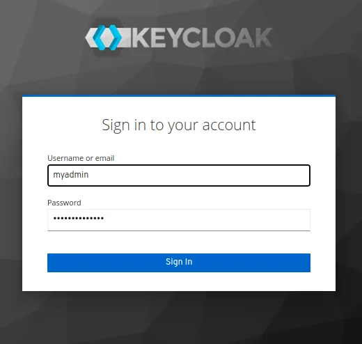

Keycloak
Установка в Docker
1. Запуск уонтейнера docker
docker run -d \
--net keycloak-network \
--name keycloak \
-e KEYCLOAK_USER=admin \
-e KEYCLOAK_PASSWORD=StrongPassw0rd \
-p 8080:8080 \
-p 8443:8443 \
-e KEYCLOAK_DB=postgres \
-e KEYCLOAK_FEATURES=token-exchange \
-e KEYCLOAK_DB_URL=jdbc:postgresql://db/keycloakdb \
-e KEYCLOAK_DB_USERNAME=admin \
-e KEYCLOAK_DB_PASSWORD=Passw0rd \
jboss/keycloak
- Проверка сосотяния
$ docker ps
CONTAINER ID IMAGE COMMAND CREATED STATUS PORTS NAMES
a910a9eaa5e1 jboss/keycloak "/opt/jboss/tools/do…" 5 seconds ago Up 4 seconds 0.0.0.0:8080->8080/tcp, :::8080->8080/tcp, 0.0.0.0:8443->8443/tcp, :::8443->8443/tcp keycloak
8f5e593eb517 postgres:latest "docker-entrypoint.s…" About an hour ago Up About an hour 5432/tcp db
Получение доступа к серверу
Доступ к Keycloak по URL-адресу https://IP_адрес:8443. Войдите в систему, используя имя пользователя, указанное в переменных среды Docker
